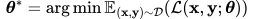
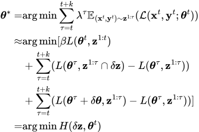
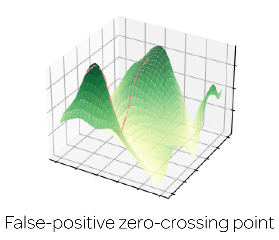
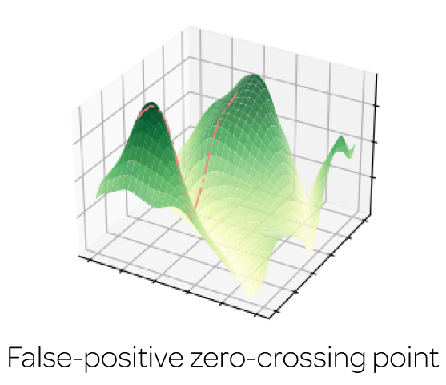
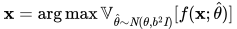

Active Neural Mapping
Abstract
We address the problem of active mapping with a continually-learned neural scene representation, namely Active Neural Mapping. The key lies in actively finding the target space to be explored with efficient agent movement, thus minimizing the map uncertainty on-the-fly within a previously unseen environment. In this paper, we examine the weight space of the continually-learned neural field, and show empirically that the neural variability, the prediction robustness against random weight perturbation, can be directly utilized to measure the instant uncertainty of the neural map. Together with the continuous geometric information inherited in the neural map, the agent can be guided to find a traversable path to gradually gain knowledge of the environment. We present for the first time an online active mapping system with a coordinate-based implicit neural representation. Experiments in the visually-realistic Gibson and Matterport3D environment demonstrate the efficacy of the proposed method.
Problem Formulation
We aim to best represent a scene through a neural network θ. In a batch-training paradigm, the parameters can be optimized through empirical risk minimization (ERM) given abundant training samples as:
However, when deployed in an unknown environment in an online setting, the overarching goal of the optimal scene representation turns to a cumulative loss minimization (Raghavan and Balaprakash):
According to Raghavan and Balaprakash, an equilibrium point can be achieved by alternatively maximizing the generalization and minimizing the forgetting of H(δz,θt) through gradient descent-ascent strategy. This manner lays the theoretic foundation for us to solve the active mapping problem by iteratively capturing the observation δz with most distribution shift and updating the map parameters θt continually.
Solution
The minimization of H(δz,θt) motivates us to understand the behavior of the loss L(θ, z) given different observation z and network parameters θ. We can observe evidently-different geometries for the true surface point and the false-positive one: the loss of the true surface point will be constrained in a low-loss basin, while the loss of the false-positive one stays along an unstable sharp ridge.
 

The observation with most distribution shift can then be found given functionality changes against weight perturbation as:
The optimization is iteratively conducted along with the target location (next-best-view) identification. A DD-PPO is deployed as a planner that drives the agent towards the target location, while an implicit neural representation is updated on-the-fly (Similar to iMAP, Continual Neural Mapping, and iSDF) to minimize forgetting given new observations.
More Results
Next, we provide baseline comparisons of our approach with IBRNet, pixelNeRF, GPNR on different outdoor scenes in ACID.
Paper

Our Related Projects

Citation
@inproceedings{Yan2023iccv,
title={Active Neural Mapping},
author={Yan, Zike and Yang, Haoxiang and Zha, Hongbin},
booktitle={Intl. Conf. on Computer Vision (ICCV)},
year={2023}
}